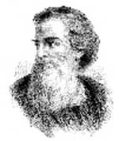

Hz. İsa’nın 33 yılında ölümünün ardından gözüpek bir misyoner olan Tarsuslu Paul, Hıristiyanlığın Roma İmparatorluğu’nun uzak eyaletlerine ulaşmasında çok önemli bir rol oynadı. Başlarda Hıristiyanlığa şüpheyle yaklaşmış olmasına rağmen Paul daha sonra yeni dinin en kararlı ve en cesur savunucusu oldu. Binlerce yeni inanan kazanıp dini, Yahudi olmayanlara da açarak onun yaşamasını garanti altına almış oldu.

Paul günümüz Türkiye’sinde yaşayan bir Yahudi ailenin çocuğuydu. Asıl ismi Saul’du. Roma vatandaşı olması, uzak eyaletlerde yaşayanların nadiren sahip olduğu bir ayrıcalıktı. Çadır imalatçısı olarak çalışıyordu.
Hz. İsa’nın ölümünden kısa süre sonra, Kudüs’te bir öğrenciyken Hıristiyanlığa muhalefet etti ve onlara yapılan baskıları destekledi. Ne var ki Şam gezisi sırasında dini bir deneyim yaşadı ve din değiştirdi.
Paul daha sonra Judaea’ya geri döndü ve orada yaşayan havarilerle ilişkiye geçti. Başlangıçta havariler geçmişteki davranışları nedeniyle ona şüpheyle yaklaştılar. Gerçekten çok şaşırmışlardı. İncil’de bu konuyla ilgili olarak “Geçmişte bize zulmeden kişi, şimdi bir zamanlar yok etmeye çalıştığı inancı vaaz ediyor” denilmektedir. Paul’un yüksek sosyal statüsü ve yeni dini yayma konusundaki kararlılığı, henüz çok genç olan Hıristiyan kilisesi için vazgeçilmez değerde olduğundan baştaki şüpheler hızla ortadan kalktı.
Paul, günümüzde Lübnan, Türkiye, Yunanistan ve Kıbrıs olan topraklarda yaptığı seyahatleri sırasında karşılaştığı Yahudi gruplarına yeni dini anlattı. Diğer Hıristiyanlardan farklı olarak Yahudi olmayanların da dine kabul edilmesini destekledi. Bu, hem Hıristiyanlığın çok geniş bir alana yayılmasını hem de Yahudilikten ayrılarak bağımsız bir din haline gelmesini sağladı.
Paul, Yahudi olmayan birini Kudüs Tapınağı’na kabul ettiği gerekçesiyle tutuklandı. Yargılanmak üzere Roma’ya gönderildi. Beraat etti ve imparatorluğun kalbinde bir kilise kurmak için Roma’da kalmaya karar verdi. Ne var ki burada çok uzun süre kalamayacaktı. 65 yılında Hıristiyanları hedef alan ilk saldırı dalgası sırasında başı kesilerek öldürüldü.
Ek Bilgiler
1- Paul’un Şam’a giderken din değiştirmesi, çok ünlü bir hikaye haline gelmiştir. Öyle ki bir insanın aniden fikir değiştirmesi bazen “Şam’a Giden Yol Değişimi” terimi ile ifade edilir.
2- 2006 yılında bir Roma basilikasının altında Paul’un kalıntılarını içerdiği sanılan bir lahit bulundu.
3- İncil’in yedi kitabının Paul’un elinden çıktığı sanılmaktadır: Romalılar, Korinthianlar 1 ve 2, Galatyalılar, Philippianlar, Selanikliler 1 ve Philemon. Diğer altı kitabın da onun tarafından yazılmış olması mümkündür.